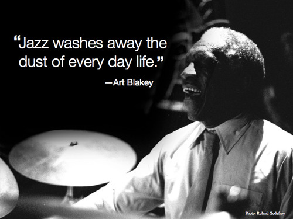
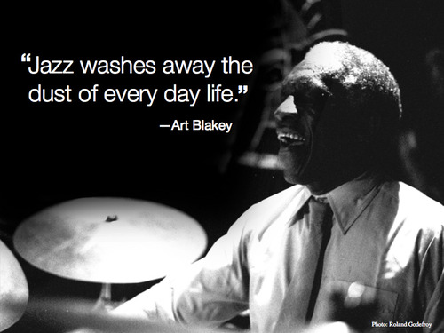

Jazz based Typography.
Vertical Rhythm and Art Blakey have a lot in common, they both concern themselves with the pattern of their workflow, and base that fluidity on meaningful rhythm. Musical or layout based the theme is the same; consistency that results in the audience’s pleasure.
Why Rhythm?
So let’s start with RHYTHM. Rhythm is just a repeated pattern. The more consistent the pattern, the better the rhythm. In music, it’s the base structure that ties all the different instruments together. Art once said ‘You can’t separate jazz from rhythm’. As Web developers, we shouldn't separate our design layout from vertical rhythm. Even if the notes are correct, a song with an inconsistent rhythm can be hard to listen to. The same applies to front end development. Even if the content is great, without a logical architecture, websites can be difficult to read.
Music to my eyes
The time signature in sheet music visually depicts a song’s rhythm, while for developers, the lines of the baseline grid depict the rhythm of our content, and give us guidelines to align our text and objects to. In design, vertical rhythm is the structure that guides a reader’s eye through the content. Good vertical rhythm makes a layout more balanced and beautiful and its content more readable. The effects of rhythm can be very subtle, but once it’s there, it gives a piece depth and control. Sometimes staying within the boundaries of the grid or the sheet music you designed is not the best option despite the logic. Sometimes editing your page or breaking tempo creates the best result. What is most important is that the ideals are maintained because when they are, the results can be beautiful.
 
